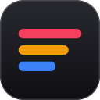

EnvMark 隐私政策
最后更新：2026 年 11 月 27 日
一句话概括：EnvMark 不收集你的任何数据。
没有账号系统，没有服务器，没有统计埋点。扩展做的所有判断都在你的浏览器里完成，不会把任何信息发送到外部。
扩展会读到什么
为了判断当前页面的环境，扩展的内容脚本只在本地读取以下几项：
- 当前页面的 URL（用于匹配你配置的规则）
- 页面
<html>标签上的data-env等属性 - 页面的
<meta name="env">一类的环境声明标签 - 页面自身可能写入的
window.__ENV__变量
这些信息只用于在当前标签页里决定「显示哪种标记、什么颜色」，不读取页面正文、表单内容、Cookie 或密码，也不会离开你的设备。
扩展会存储什么
扩展使用 chrome.storage.local 在本地保存：
- 你自己添加的环境规则
- 标记样式、颜色、透明度等外观设置
- 你手动指定的某个域名属于哪个环境
这些设置保存在你自己的浏览器里，不上传、不备份到云端、不与任何第三方共享。卸载扩展后随之清除。
权限说明
- storage：保存上面提到的规则与设置。
- 在所有网站上读取和更改数据：标记需要能出现在你访问的任意页面上，因此无法预先枚举域名。实际上扩展只会在页面最上层叠加一个不拦截鼠标事件的标记层，不修改页面内容。
例外：浏览器内置页面（chrome://、扩展商店等）出于安全限制不会被注入，这是浏览器本身的规则。
第三方
未集成任何第三方分析、广告或追踪 SDK。扩展运行时不发起任何网络请求，也不加载任何远程代码。
儿童隐私
扩展不面向儿童，也不收集任何年龄相关信息。
政策变更
如果本政策发生实质性变化，会更新本页顶部的日期，并在扩展的版本更新说明中注明。
联系方式
关于隐私的问题，可以发邮件到 ziye2016@gmail.com。
Privacy Policy (English)
Last updated: November 27, 2026
EnvMark does not collect any user data. There are no accounts, no servers, and no analytics. All environment detection happens locally in your browser.
To decide which marker to display, the content script reads the current page URL, environment
declarations on the <html> element, <meta> tags such as
name="env", and a page-defined window.__ENV__ value. This information
is processed locally and never transmitted. The extension does not read page content, form
data, or cookies.
Your rules and appearance settings are stored locally with chrome.storage.local
and are removed when you uninstall the extension. No third-party analytics, ads, or trackers
are included, and no remote code is loaded.
Questions: ziye2016@gmail.com